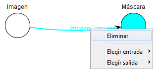

Eliminar un enlace
Se puede eliminar un enlace de dos formas: seleccionándolo (haciendo click izquierdo sobre él) y pulsando la tecla Suprimir o
abriendo el menú de opciones del enlace (haciendo click derecho sobre él) y seleccionando la opción Eliminar.
